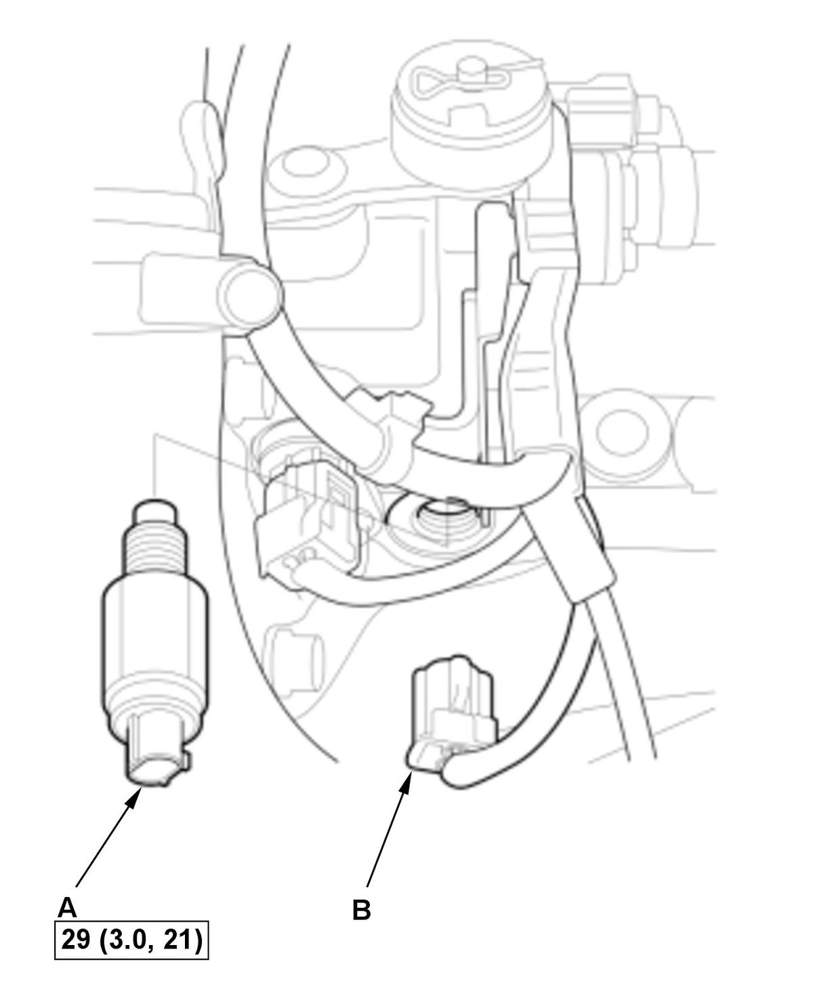

Back-Up Light Switch Removal and Installation (K20C1 (M/T)) (2017 2018 2019 2020 2021): Installation
NOTE: How to read the torque specifications .
- Back-Up Light Switch - Install

Courtesy of HONDA, U.S.A., INC.1. Clean any dirt and oil from the sealing surface of the back-up light switch (A) and the transmission housing. 2. Apply liquid gasket (P/N 08718-0003, 08718-0004, or 08718-0009) to the threads of the back-up light switch. Install the back-up light switch within 5 minutes of applying the liquid gasket.
NOTE: If too much time has passed after applying the liquid gasket, remove the old liquid gasket and residue, then reapply new liquid gasket.
3. Connect the connector (B).
- Air Cleaner - Install